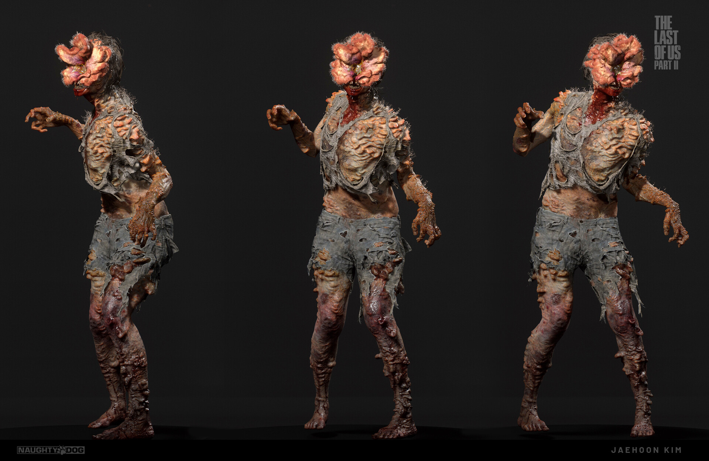

Os Clickers são uma das formas mais aterrorizantes de zumbis em The Last of Us. Eles são cegos, mas têm uma habilidade extraordinária de detectar você através do som. Seu nome vem do som característico que fazem ao tentar localizar suas vítimas.
 Voltar ao Início Próximo